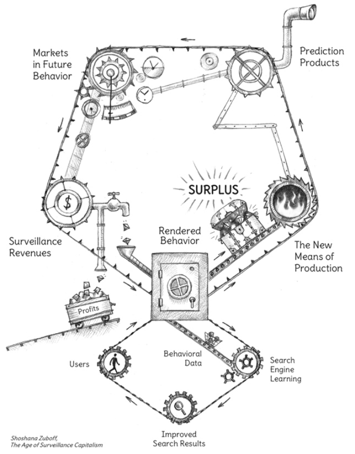
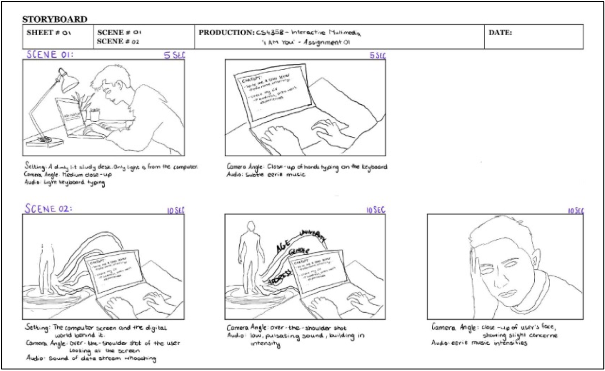
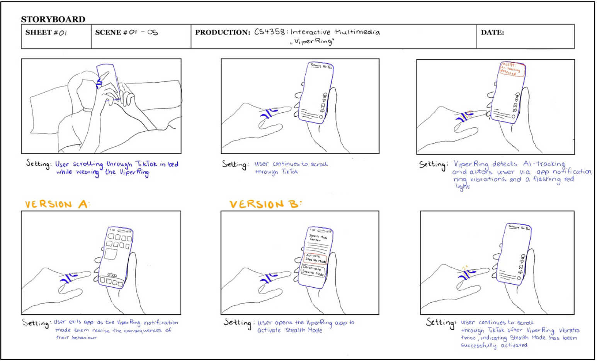
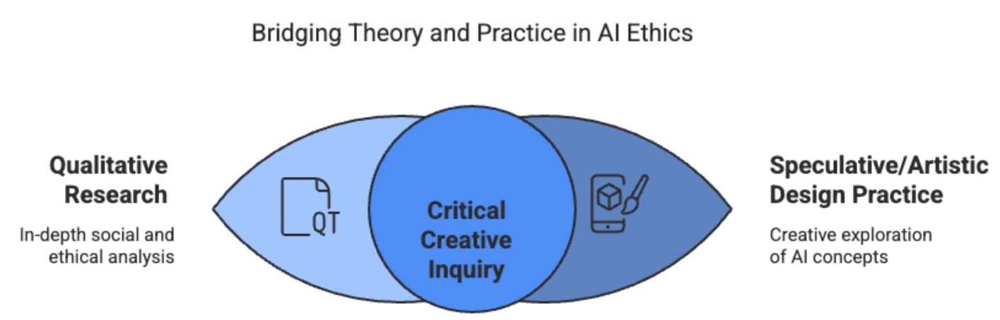

Literature Review & Critical Contextualisation
Artificial Intelligence (AI) is a powerful force in digital life, reshaping how we interact, consume information, and participate in digital economies (Jessani, 2023; Barnes, 2025). While marketed as a convenient and personalised tool, AI systems raise significant concerns regarding privacy, agency, and digital identity (Jessani, 2023; Barnes, 2025).
This research investigates how current AI systems shape user behaviour and construct digital identities through invisible surveillance mechanisms (Barnes, 2025). It argues that the integration of AI into daily life normalises surveillance and promotes unconscious data sharing, resulting in the creation of "digital doppelgängers" that users cannot fully control (Barnes, 2025).
Surveillance Capitalism and Data Extraction

The cycle of surveillance capitalism as described by (Zuboff, 2019)
Central to this research is Shoshana Zuboff’s work on surveillance capitalism, which describes how human experiences are treated as free raw material for data extraction (Zuboff, 2019). This "behavioural surplus" is processed into prediction products sold in behavioural futures markets, leading to a state of "digital dispossession" where user experiences are monetised without their full knowledge (Zuboff, 2019).
Digital Identities and AI Doppelgängers
AI systems play a significant role in constructing digital identities, often creating algorithmic replicas or "digital doppelgängers" (Barnes, 2025). These replicas blur the lines of authenticity and consent as AI systems ingest vast amounts of personal data to generate profiles that can influence user behaviour (Barnes, 2025).

Assignment 1: Visualising the digital doppelgänger

Assignment 2: Speculative resistance via the ViperRing
Speculative Design as Intervention: The ViperRing
The ViperRing was developed as a speculative design fiction to challenge the normalisation of surveillance. As a physical "prop," it translates abstract concerns about data extraction into a tangible tool for resistance, offering features like "Stealth Mode" to disrupt seamless data flows and provoke debate about user agency in automated spaces.

The mixed-methods approach bridging theory and practice
Reflection and Conclusion
This research highlights AI's dual role as both a tool for exploitation and a means for inquiry and resistance. The design process demonstrated that speculative interventions can effectively expose hidden algorithmic processes and encourage critical reflection on data privacy.
While the ViperRing remains a conceptual probe, it underscores the urgent need for ongoing critical engagement with the opaque mechanisms through which AI shapes digital life. Navigating this duality is essential as these technologies continue to integrate into the fabric of society.